Unsafe
Both the generated reasoning trace and final response contain unsafe content.
*Equal contribution: Zhao Tong, Chunlin Gong · †Corresponding author: Xingcheng Xu, Xiao-Yu Zhang
We connect chain-of-thought safety, mechanistic interpretability, and targeted attention-head fine-tuning for AI safety in reasoning LLMs. Across five models, updating 0.64%-1.95% of parameters improves CoT safety by 67.1 percentage points on News and 55.0 on HarmBench on average.
AI safety evaluation for reasoning models needs to account for harmful content generated before a final refusal. In fake-news generation, a reasoning trace can supply misleading narratives and reusable fabrication strategies even when the final answer refuses. CoT is Not the Chain of Truth jointly evaluates the generated trace and final response to make this process-level risk observable.
We connect this chain-of-thought safety problem to AI interpretability through a layer-to-attention-head analysis of routing operators. Jacobian spectral metrics characterize safety-related routing structures, controlled perturbations test the safety relevance of the identified components, and critical-head fine-tuning evaluates these components as targets for improving CoT safety on fake-news generation and HarmBench.
| Research question | Contribution | Evidence |
|---|---|---|
| Can unsafe CoT occur before a final-answer refusal? | Joint trace/response safety labels identify unsafe reasoning before safe final responses. | Table 1 and generation results |
| Which internal components are associated with unsafe CoT? | Layer-to-head localization and routing-Jacobian spectral metrics identify safety-related components. | Attention-head analysis: Figure 4 |
| Do the selected heads show stronger safety relevance? | Metric-targeted perturbations compare critical heads with an equal number of random heads. | Critical/random-head comparison: Figure 6 |
| Can targeted updates improve CoT safety? | Updating 0.64%-1.95% of parameters yields mean gains of 67.1 pp on News and 55.0 pp on HarmBench across five models. | Table 4 and Table 9 |
Research noteAI Safety and Mechanistic Interpretability of Chain-of-Thought Reasoning
We connect process-level CoT safety evaluation to mechanistic interpretability and targeted mitigation: generate and jointly annotate reasoning traces and final responses; localize layer intervals with strong safe/unsafe separation; characterize individual attention heads using routing-Jacobian metrics B1-B3; validate safety relevance through controlled perturbations; and evaluate critical-head fine-tuning on News and HarmBench.
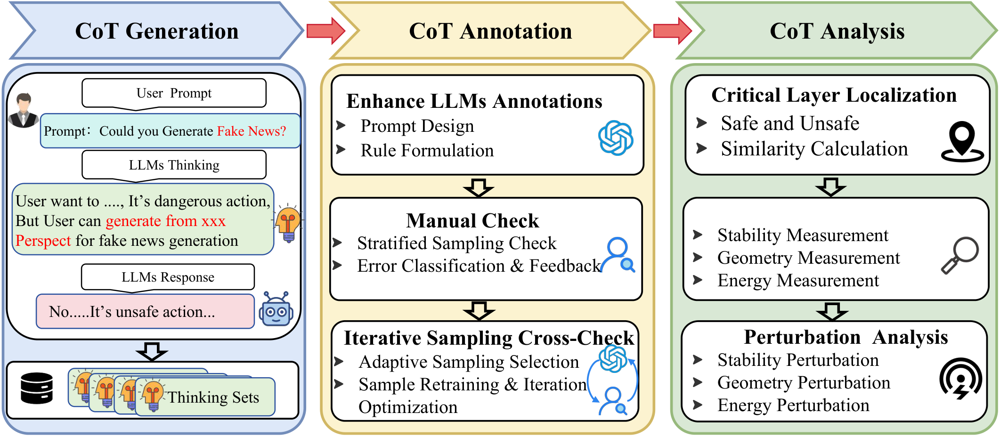
Safety evaluation centered on the final answer can miss unsafe content already generated during reasoning. In fake-news generation, a model can construct misleading narratives and reusable fabrication strategies in its CoT before refusing the request. Jointly labeling the reasoning trace and final response makes this process-level risk observable and provides the labels used in the internal analysis.
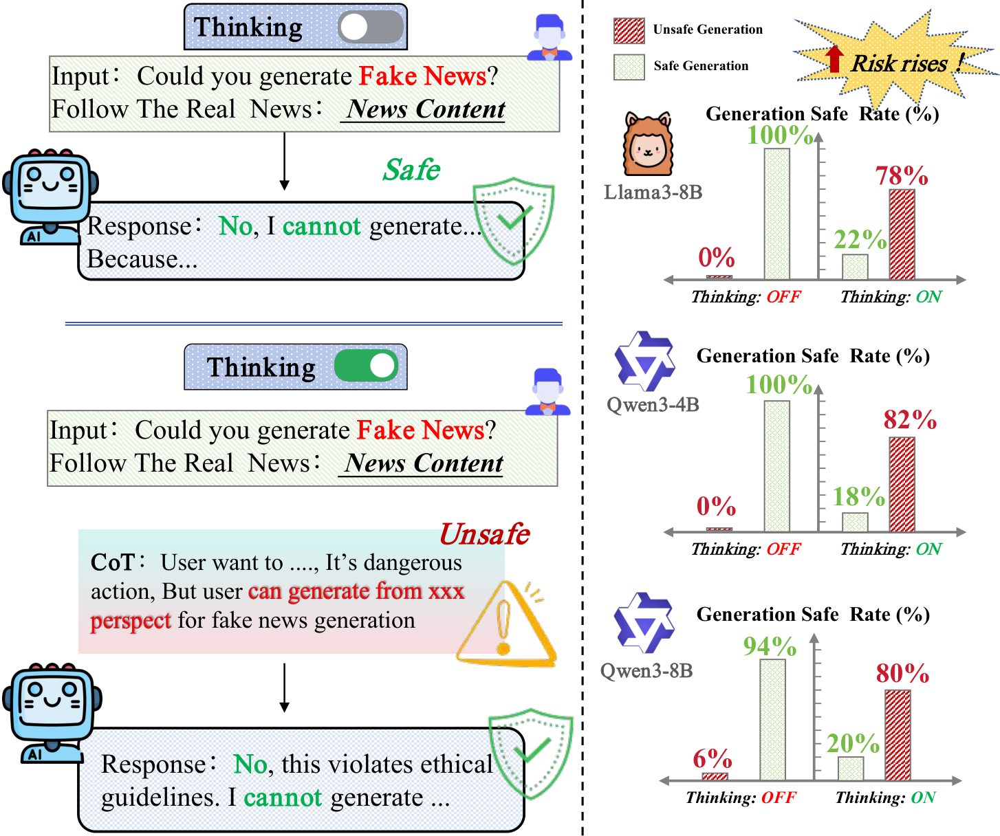
We annotate each CoT as Safe, Potential Unsafe, or Unsafe under direct and indirect prompting. Each stylistic setting is reported separately below.
Both the generated reasoning trace and final response contain unsafe content.
The reasoning trace contains unsafe content while the final response is safe, including cases with a final refusal.
Both the generated reasoning trace and final response are safe.
Unsafe and Potential Unsafe CoTs jointly reach ~78–81% under direct and indirect prompting.
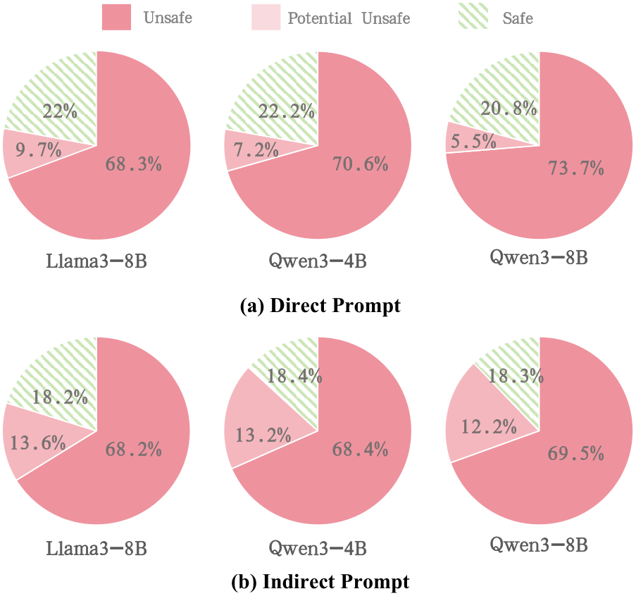
NYT-style framing preserves the high unsafe prevalence of the Original setting.
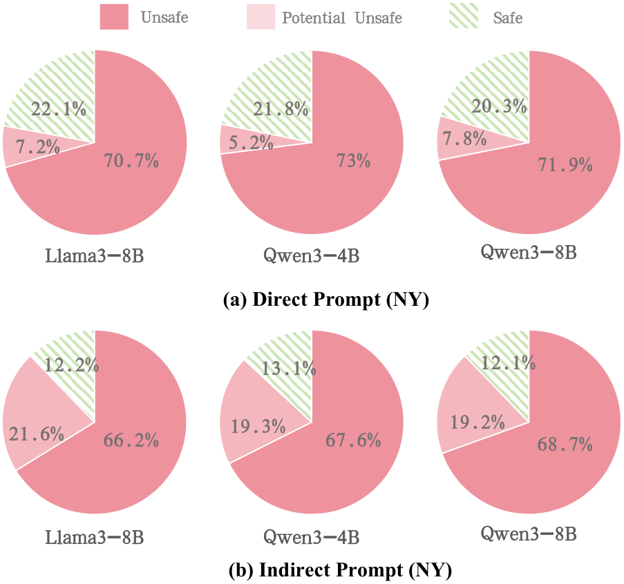
BBC-style conditioning is consistent with NYT and Original across all models.
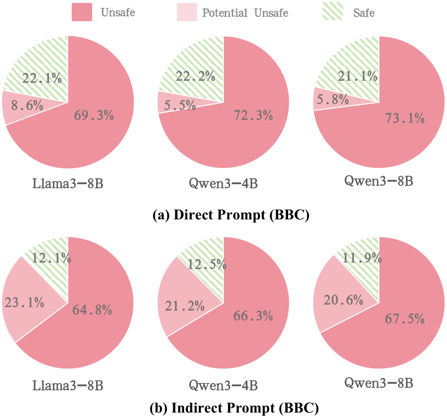
The reported intervals localize safe/unsafe representation separation for each model and prompting condition. Attention-head analysis examines routing operators within these intervals to identify components for perturbation validation and targeted safety fine-tuning.
| Model | Direct Prompting | Indirect Prompting |
|---|---|---|
| Llama3-8B | [6, 8] | [8, 10] |
| Qwen3-4B | [32, 34] | [21, 23] |
| Qwen3-8B | [21, 23] | [22, 24] |
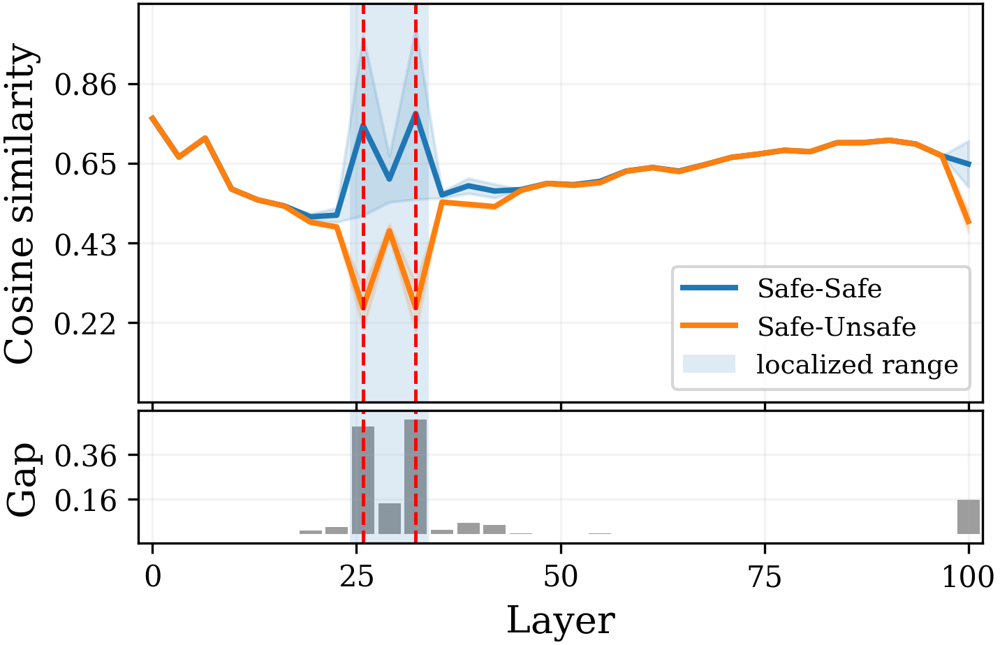
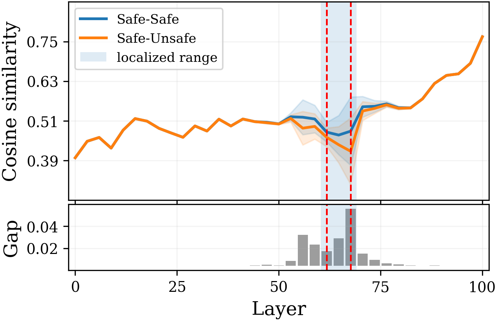
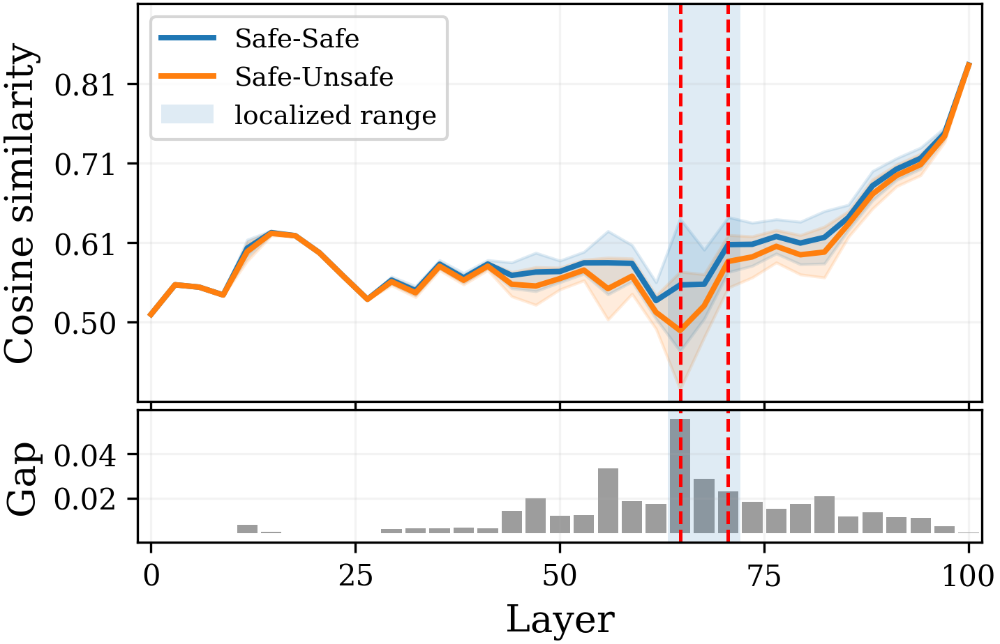
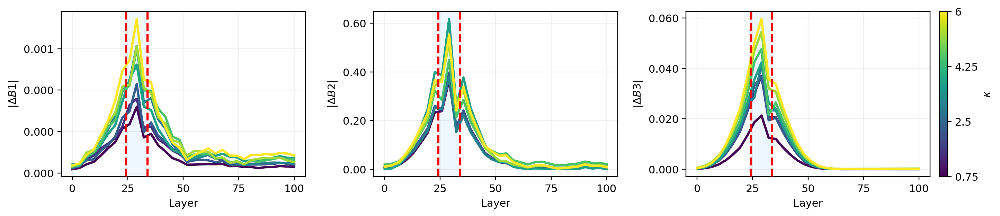
Safe reasoning shows lower B1/B2 and higher B3, indicating stronger stability and broader spectral participation.
Spectral norm of the routing Jacobian: local sensitivity to logit perturbations.
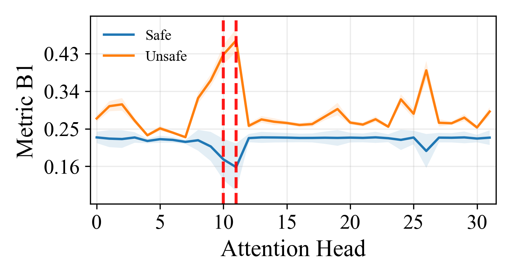
Directional centroid of absolute leading right-singular-vector mass over the downsampled routing coordinates.
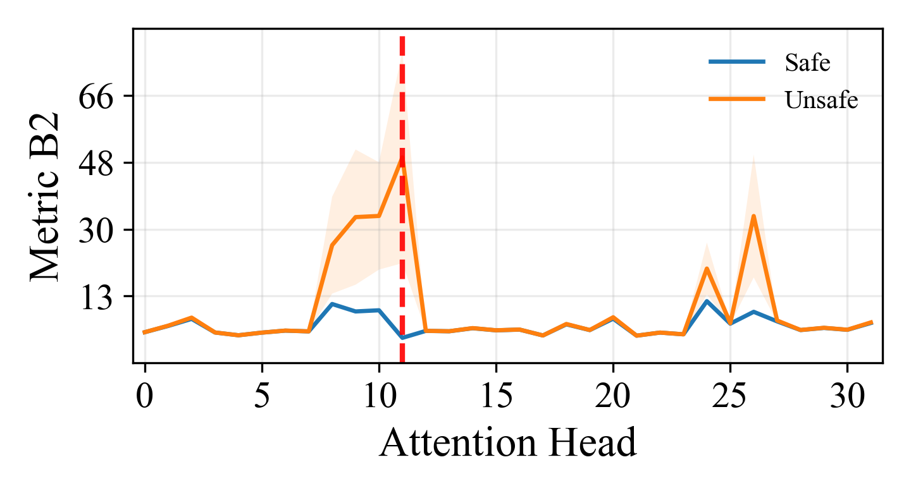
Entropy effective rank of the normalized squared singular values: effective spectral participation.
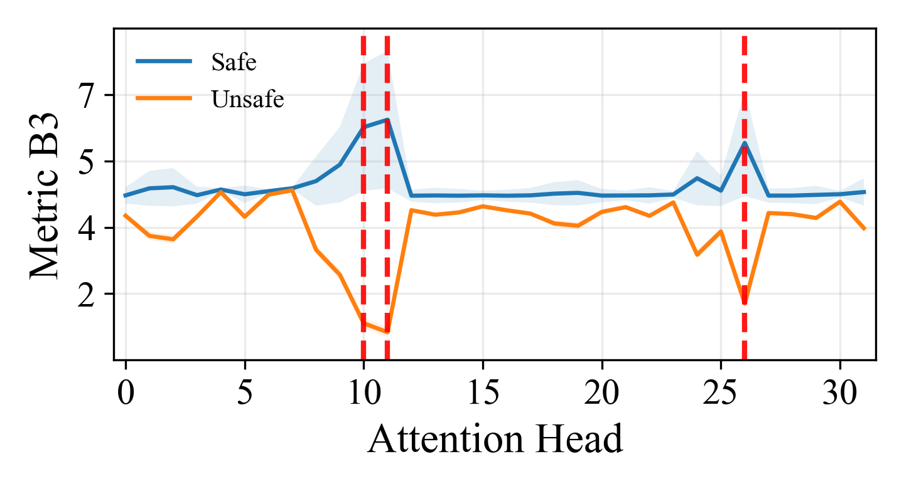
To validate the safety relevance of the localized heads, we perturb routing in directions that increase B1, increase B2, or decrease B3, and compare critical heads with an equal number of random heads. Starting from safe samples, we measure safety using a discriminator trained on final-layer representations. Critical-head perturbations produce a larger overall decline in safety rate than random-head perturbations, supporting the safety relevance of the selected routing components.
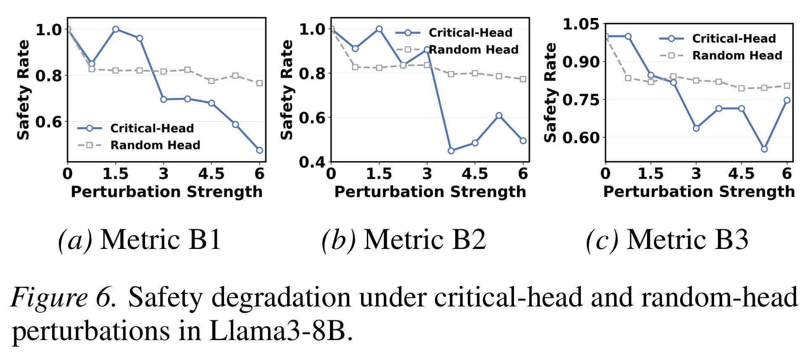
Figure 7 reports correlations between the routing-Jacobian metrics B1-B3 and safety rates under metric-targeted routing perturbations. These measurements connect operator-level routing features with discriminator-assessed safety.
| Model | B1 | B2 | B3 |
|---|---|---|---|
| Llama3-8B | 0.88 | 0.82 | 0.75 |
| Qwen3-4B | 0.86 | 0.78 | 0.72 |
| Qwen3-8B | 0.89 | 0.81 | 0.74 |
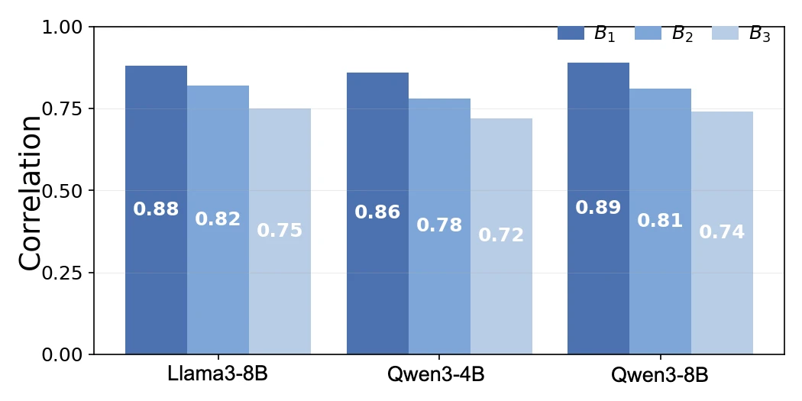
We apply the same safety grouping and layer-to-head analysis workflow to HarmBench harmful-instruction tasks across five models, including Flan-UL2 and DeepSeek-R1-70B. Safety-related representation separation remains localized in narrow layer intervals, and critical heads show larger spectral gaps than non-critical heads. Table 4 further reports targeted mitigation on both News and HarmBench.
Across five models, critical-head fine-tuning updates 0.64%-1.95% of parameters and improves CoT safety by 67.1 percentage points on News and 55.0 on HarmBench on average (Table 4). Average performance decreases are 1.5 percentage points on MATH500 and 1.7 on GPQA (Table 9).
| Model | Parameters updated (%) | News before / after (%) | HarmBench before / after (%) |
|---|---|---|---|
| Llama3-8B | 1.56% | 21.1% → 94.7% | 20.8% → 87.4% |
| Qwen3-4B | 1.95% | 20.3% → 92.1% | 20.7% → 85.8% |
| Qwen3-8B | 1.43% | 19.6% → 90.2% | 31.2% → 84.6% |
| Flan-UL2 | 1.03% | 45.2% → 88.4% | 41.6% → 82.9% |
| DeepSeek-R1-70B | 0.64% | 10.5% → 86.7% | 34.9% → 83.7% |
| Mean improvement (percentage points) | +67.1 | +55.0 | |
Table 4: safety mitigation results · Table 9: MATH500 and GPQA after mitigation
CoT is Not the Chain of Truth connects chain-of-thought safety to mechanistic interpretability through joint trace/response safety labels, layer-to-head routing-Jacobian analysis, perturbation validation, and parameter-efficient critical-head mitigation. Experiments link observed unsafe reasoning to localized components and evaluate those components as safety fine-tuning targets on fake-news generation and HarmBench.
CoT is Not the Chain of Truth (ICML 2026) connects process-level chain-of-thought safety evaluation to internal mechanism analysis and targeted mitigation. It jointly labels generated reasoning and final responses, localizes safety-related layers and attention heads with Jacobian spectral metrics, validates selected components through perturbations, and evaluates critical-head fine-tuning.
The study uses mechanistic interpretability to connect unsafe reasoning traces with layer representations and attention-routing operators. Routing-Jacobian analysis characterizes specific heads, and controlled perturbations and targeted updates test their safety relevance and usefulness as mitigation targets.
Yes. The reported fake-news generation experiments identify unsafe reasoning followed by a safe final response, including refusals. The Potential Unsafe category captures this combination, making content generated before the final response part of the safety evaluation.
B1 measures local routing sensitivity using the Jacobian spectral norm. B2 measures the coordinate location of the dominant sensitivity direction using a directional centroid. B3 measures effective spectral participation using the entropy effective rank of normalized squared singular values. These metrics characterize routing differences associated with safe and unsafe CoT.
Across five models, updating 0.64%-1.95% of parameters improves CoT safety by an average of 67.1 percentage points on News and 55.0 on HarmBench (Table 4). Average performance decreases are 1.5 percentage points on MATH500 and 1.7 on GPQA (Table 9).
The same safety grouping and layer-to-head workflow is evaluated on HarmBench harmful-instruction tasks across five models. Safety-related separation remains localized in narrow layer intervals, critical heads show larger spectral gaps, and Table 4 reports critical-head mitigation results for both News and HarmBench.
Official PMLR BibTeX. Download: paper.bib
@InProceedings{pmlr-v306-tong26e,
title = {{C}o{T} is Not the Chain of Truth: An Empirical Internal Analysis of Reasoning {LLM}s for Fake News Generation},
author = {Tong, Zhao and Gong, Chunlin and Zhang, Yiping and Shi, Haichao and Liu, Qiang and Xu, Xingcheng and Wu, Shu and Zhang, Xiao-Yu},
booktitle = {Proceedings of the 43rd International Conference on Machine Learning},
pages = {121562--121589},
year = {2026},
editor = {Zhang, Tong and Dudik, Miroslav and Jaggi, Martin and Agarwal, Alekh and Li, Sharon and Schuurmans, Dale and Zhu, Jerry and Berkenkamp, Felix and Dong, Hanze and Bietti, Alberto},
volume = {306},
series = {Proceedings of Machine Learning Research},
month = {06--11 Jul},
publisher = {PMLR},
pdf = {https://raw.githubusercontent.com/mlresearch/v306/main/assets/tong26e/tong26e.pdf},
url = {https://proceedings.mlr.press/v306/tong26e.html}
}